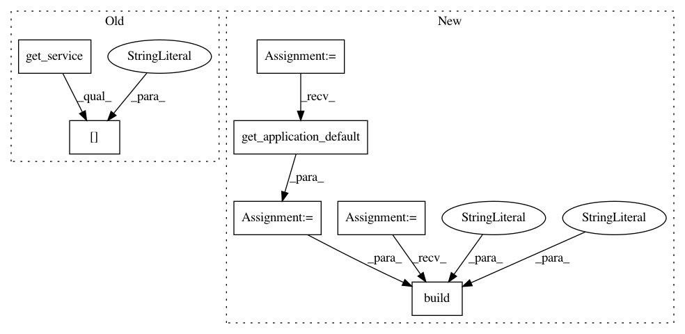

2e5d57c30af1f23a6369dda419ad60ce991093fd,bigquery/samples/export_data_to_cloud_storage.py,,main,#Any#Any#Any#Any#Any#Any#Any#,66
Before Change
def main(cloud_storage_path, project_id, dataset_id, table_id,
num_retries, interval, export_format="CSV"):
bigquery = get_service()
resource = export_table(bigquery, cloud_storage_path,
project_id, dataset_id, table_id,
num_retries=num_retries,
export_format=export_format)
poll_job(bigquery,
resource["jobReference"]["projectId"],
resource["jobReference"]["jobId"],
interval,
num_retries)
After Change
num_retries, interval, export_format="CSV"):
// [START build_service]
// Grab the application"s default credentials from the environment.
credentials = GoogleCredentials.get_application_default()
// Construct the service object for interacting with the BigQuery API.
bigquery = discovery.build("bigquery", "v2", credentials=credentials)
// [END build_service]
job = export_table(
bigquery,
In pattern: SUPERPATTERN
Frequency: 3
Non-data size: 7
Instances
Project Name: GoogleCloudPlatform/python-docs-samples
Commit Name: 2e5d57c30af1f23a6369dda419ad60ce991093fd
Time: 2015-09-15
Author: jon.wayne.parrott@gmail.com
File Name: bigquery/samples/export_data_to_cloud_storage.py
Class Name:
Method Name: main
Project Name: GoogleCloudPlatform/python-docs-samples
Commit Name: 2e5d57c30af1f23a6369dda419ad60ce991093fd
Time: 2015-09-15
Author: jon.wayne.parrott@gmail.com
File Name: bigquery/samples/sync_query.py
Class Name:
Method Name: main
Project Name: GoogleCloudPlatform/python-docs-samples
Commit Name: 2e5d57c30af1f23a6369dda419ad60ce991093fd
Time: 2015-09-15
Author: jon.wayne.parrott@gmail.com
File Name: bigquery/samples/async_query.py
Class Name:
Method Name: main